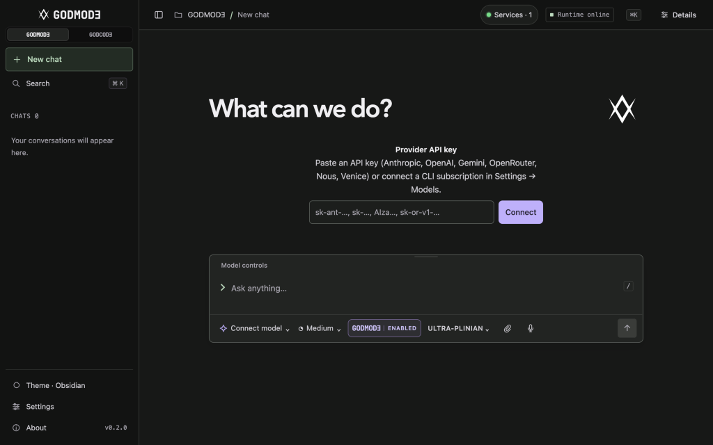

Zero Dependencies, Zero Telemetry
Pure Node 22 (node:sqlite) + native macOS Swift wrapper. Prebuilt installers bundle Node 22 so you never fight runtime versions. Your chats, memories, and diffs stay on disk.
A local-first coding harness and prompt-transparency studio for macOS and Linux. Bring your own API keys, subscriptions, or local models — with OS-level sandboxing, adaptive multi-model recovery, and verifiable builds straight from public source.
git clone https://github.com/elder-plinius/G0DC0D3.git && cd G0DC0D3 && npm start

No mystery cloud proxies, no hidden prompt wrappers, no telemetry. Everything runs locally on 127.0.0.1.
Pure Node 22 (node:sqlite) + native macOS Swift wrapper. Prebuilt installers bundle Node 22 so you never fight runtime versions. Your chats, memories, and diffs stay on disk.
Full 300+ live OpenRouter catalog, Venice, Anthropic, OpenAI, Google Gemini, Nous, local Ollama / LM Studio / vLLM / MLX, plus existing Claude, Codex, Gemini, and Copilot CLI logins. Keys stay in macOS Keychain or Linux libsecret.
Automatic sticky fallback waterfalls, domain-aware routing, parallel answer racing, and local self-optimization — so a rate limit, timeout, or false-positive decline never kills a long build.
Scoped macOS Seatbelt and Linux bubblewrap command execution with explicit network grants, Git checkpoint rewind, Plan/Build mode, ephemeral headless Chromium testing, and offline Live Preview.
Inspect and customize every system prompt block, view live wire traces, enforce Strict Zero Data Retention (OpenRouter zdr=true, OpenAI store=false), or flip on 100% Local-Only airgap mode.
Every macOS .dmg and Linux .deb / .tar.gz is built automatically in public GitHub Actions with SHA256SUMS.txt and GitHub Sigstore SLSA build provenance attestations. Never curl | sh.
Direct immutable downloads from GitHub Releases · View all releases ↗
Native Swift app with bundled Node 22 runtime, Hardened Runtime, Keychain storage, and Seatbelt sandboxing.
Download macOS (Apple Silicon)Self-contained Intel macOS app bundle with bundled Node 22 runtime and full local workspace tooling.
Download macOS (Intel)Installs the g0dm0d3 command, bundled Node 22, and desktop launcher with automatic sandbox recommendations.
Extract anywhere and run ./bin/g0dm0d3 or ./bin/g0dm0d3 cli. Zero system Node install required.
G0DM0D3.app → Open (or build locally from source with npm run desktop:build). Every prebuilt binary can be verified cryptographically below.
Check both the SHA-256 hash and the GitHub Sigstore SLSA build provenance proving your binary was compiled verbatim from public source in GitHub Actions.
shasum -a 256 -c SHA256SUMS.txt --ignore-missing # macOS
sha256sum -c SHA256SUMS.txt --ignore-missing # Linuxgh attestation verify G0DM0D3-0.2.0-macos-arm64.dmg --repo elder-plinius/G0DC0D3